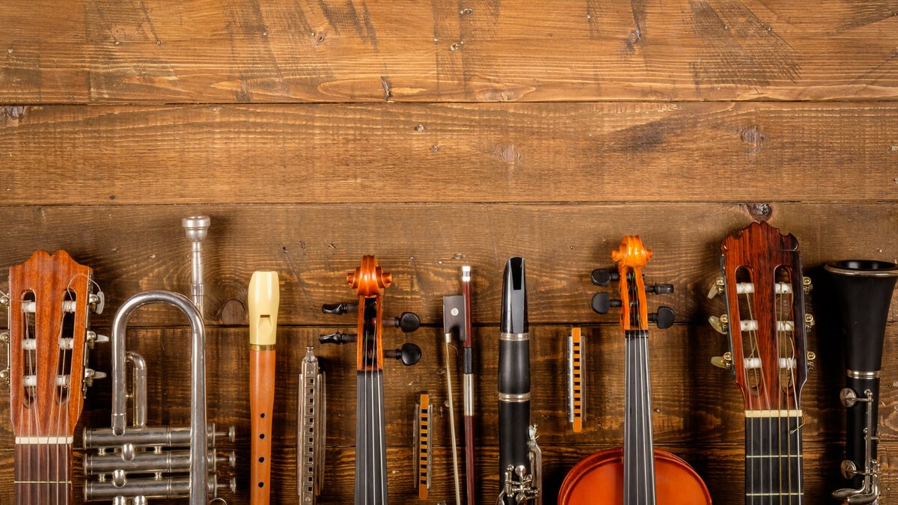

Localizada no coração da cidade a harmonia musical traz para o mercado o que há de melhor para o seu instrumentos
. Fundada em 2024, a harmonia musical já é destaque na cidade e conquista novos clientes a cada dia.
Nossa missão é:"Proporcionar instrumentos dee qualidade e de vida util aos clientes".
Oferecemos profissionais experientes e antenados às mudanças no mundo da musica.O atendimento possui padrão
de excelência e agilidade, garantindo qualidade e satisfação dos nossos clientes

beneficios
- saia com o instrumento regulado
- tenha uma garantia de até 1 ano
- tenha acesso aos melhores profissionais